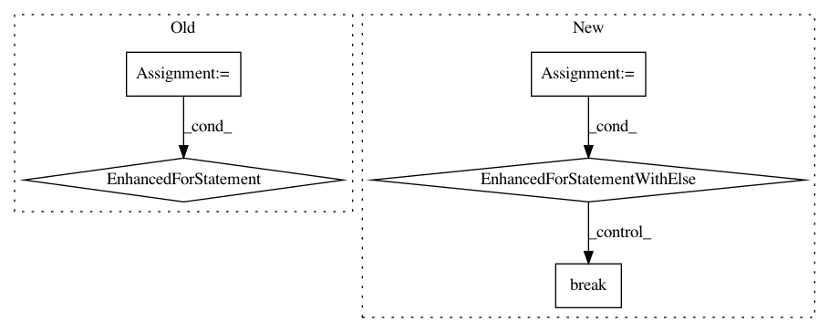

7c0c307a2a8fbdb9b0eb82c275ca8c977aae90f3,decensor.py,Decensor,decensor_all_images_in_folder,#Decensor#,42
Before Change
//since the original image might not be a png, test multiple file formats
valid_formats = {".png", ".jpg", ".jpeg"}
found_valid = False
for valid_format in valid_formats:
test_file_name = os.path.splitext(file_name)[0] + valid_format
ori_file_path = os.path.join(ori_dir, test_file_name)
if os.path.isfile(ori_file_path):
found_valid = True
ori_img = Image.open(ori_file_path)
self.decensor_image(ori_img, colored_img, file_name)
continue
if not found_valid:
print("Corresponding original, uncolored image not found in {ori_file_path}. \nCheck if it exists and is in the PNG or JPG format.".format(ori_file_path = ori_file_path))
else:
self.decensor_image(colored_img, colored_img, file_name)
After Change
ori_dir = self.args.decensor_input_original_path
//since the original image might not be a png, test multiple file formats
valid_formats = {".png", ".jpg", ".jpeg"}
for test_file_name in os.listdir(ori_dir):
test_bn, test_ext = os.path.splitext(test_file_name)
if (test_bn == color_bn) and (test_ext.casefold() in valid_formats):
ori_file_path = os.path.join(ori_dir, test_file_name)
found_valid = True
ori_img = Image.open(ori_file_path)
self.decensor_image(ori_img, colored_img, file_name)
break
else: //for...else, i.e if the loop finished without encountering break
print("Corresponding original, uncolored image not found in {}.".format(ori_file_path))
print("Check if it exists and is in the PNG or JPG format.")
else:
self.decensor_image(colored_img, colored_img, file_name)
print("--------------------------------------------------------------------------")
In pattern: SUPERPATTERN
Frequency: 3
Non-data size: 5
Instances
Project Name: deeppomf/DeepCreamPy
Commit Name: 7c0c307a2a8fbdb9b0eb82c275ca8c977aae90f3
Time: 2018-10-30
Author: harjit@harjit.moe
File Name: decensor.py
Class Name: Decensor
Method Name: decensor_all_images_in_folder
Project Name: tristandeleu/pytorch-maml-rl
Commit Name: bef7dd92cbdd2c81a7d89786b9a76b011f1bc086
Time: 2018-06-19
Author: tristan.deleu@gmail.com
File Name: maml_rl/baseline.py
Class Name: LinearFeatureBaseline
Method Name: fit
Project Name: jazzband/django-debug-toolbar
Commit Name: aff9e3e323c620b2f9f16625fde60d831b47b596
Time: 2016-10-02
Author: ryneeverett@gmail.com
File Name: debug_toolbar/panels/templates/views.py
Class Name:
Method Name: template_source